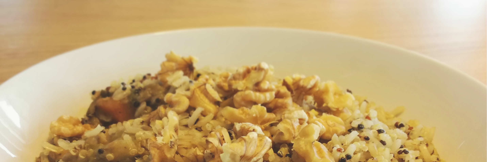

Week 2 - Sugar Free Challenge & Spicy lentils recipe
Week 1: Review
Last week I decided to start this Sugar Free Challenge for many many reasons, but mostly to achieve a better overall health and include healthier habits in my daily life. The first couple of days were the easiest as my motivation was really high! I was able to eat completely sugar free and healthy even in social situations which made me feel awesome! I felt like I was in total control of my cravings! And I believe it was easier at the beginning because I was already reducing my sugar intake for a while, so I didn’t even felt like wanting something sweet.
The struggles
But as the days were passing, the motivation was slowing down, and I kind of forgot why I was doing it. This past two days started to became harder, also the very cold weather made me feel hungrier! So I ate more fruits, and also snacked more at work, and not necessarily on the healthiest options. Even though, I wanted to eliminate processed foods on week 1, I couldn’t resist to have some protein and seeds bars at work. I allowed myself to have a bit of them, considering that it was just the first week and my initial idea was not to cut all sugar at once.
The body needs some sort of transition, and I wanted to listen to what my body was telling me.
The good part is that I completely cut out refined flours, white sugar and kept new habits such as drinking daily warm lemon water in the morning, having low-carb dinners and doing some yoga each day. A bunch of small-wins to keep myself motivated :)
Some tips
Listen to your body! You really need to work on this by being aware of what feels right and what not! Be conscious of how your body is responding to the changes. Remember that each person is different, so take a close look at which foods are doing good to your body, and which ones are making things harder.
Remember that not everything is about the food. Find what’s meaningful in your life. This will help you not to think so much about cutting down sugar. Do not obsess about this challenge because life is way more that that! Keep it always in mind :) The more you over-think, the more difficult it will be.
Don’t be so harsh on you. Even if you think you’ve fail and couldn’t resist a sweet treat during this first week, please understand that this is normal. Always remind yourself why you’re doing it: For your health and well being, for removing an addiction out of your life. That’s what really matters, so don’t lose your focus!!
Week 2: My plan
Week 1 was about reducing my overall sugar intake, trying new recipes, and starting to organize myself to keep moving forward. During this time I kept thinking and writing down about a couple of things that I considered helpful, and could make us improve on week 2. Here they go:
- Remember to eat enough. Specially at breakfast and lunch. This is not about restricting calories, but about creating healthier habits!
- Try to exercise a bit more. It will help curbing your cravings, improve your energy levels and calm your mind.
- If feeling constantly hungry, you might need a bit extra fat and protein on each meal. Plan your week keeping this in mind, and while doing grocery shopping make sure to buy enough of those macronutrients.
- To avoid dizziness, add a bit more calories or increase your daily intake of whole fruits next week to feel better. Some very dark chocolate (> 85%) will also help to cheer you up a bit.
- Stay away from cheat meals. If you feel like treating yourself with something delicious, prepare something nice yourself. Homemade foods without added sugar can be really delicious. And if you’re eating out during this week, stick to the healthier options, and say no to desserts and alcoholic drinks!
One delicious recipe for you to try on week 2
Spicy lentils with brown rice and quinoa
For the lentils:
- 250gr lentils (Soak them for at least one day to improve it’s digestibility)
- 1/2 red pepper
- 1 onion
- 2 medium sweet potatoes
- 1 tomato
- 2 handfuls of bok choy.
- 1/3 cup coconut milk
- 1 tbsp coconut oil
- Spices: Cumin, garlic, ginger, paprika, pink salt, pepper, bay leaves, coriander.
Simply stir-fry the vegetables with the coconut oil and spices, and when very fragrant add the soaked lentils and add enough water. Keep cooking for about 20 - 30 min, then add the coconut milk and cook for another 5 -10 min. Add some fresh coriander on top!
For the rice:
- 1 cup brown rice
- 1/2 cup quinoa (Red, black and white)
- 1 tbsp coconut oil
- 1 garlic clove
- Pink salt and pepper
Stir-fry the garlic with the coconut oil for a couple of minutes in very low heat. Add the rice and stir, then add a cup of watter un cook it for at least 10 minutes as it needs more cooking time than quinoa, then add the quinoa, 2 more cups of water, salt and pepper. Wait for about 10 - 15 min until properly done.
Serve the lentils with rice on top, and sprinkle some chopped walnuts on top! It is very delicious, simple and will yield for many servings!
Hope you enjoy this recipe as much as I did! Let’s keep the motivation! I’ll keep posting on Instagram and each week will be posting an update on the challenge! Have an awesome week!